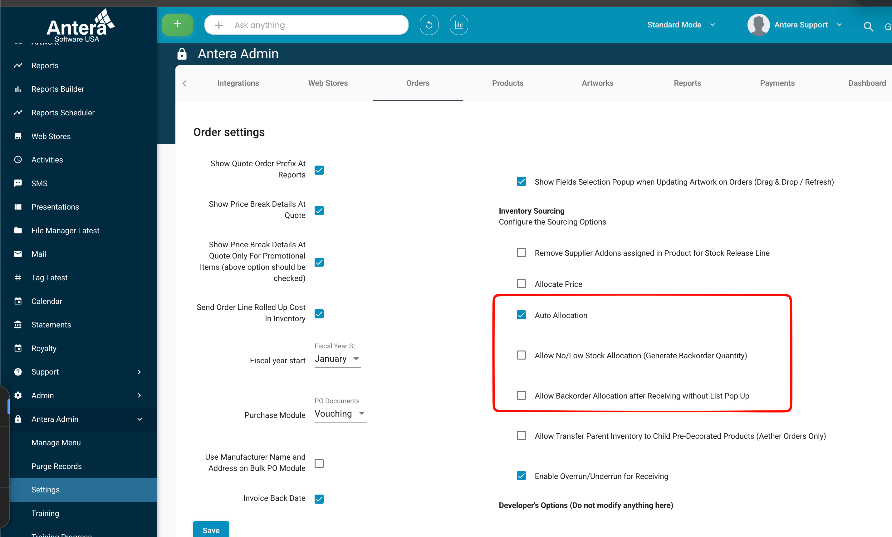
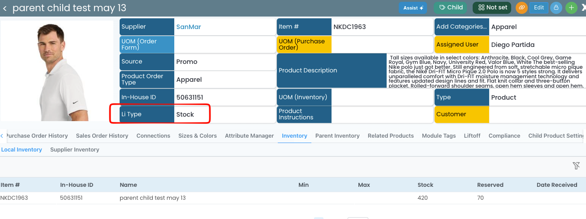
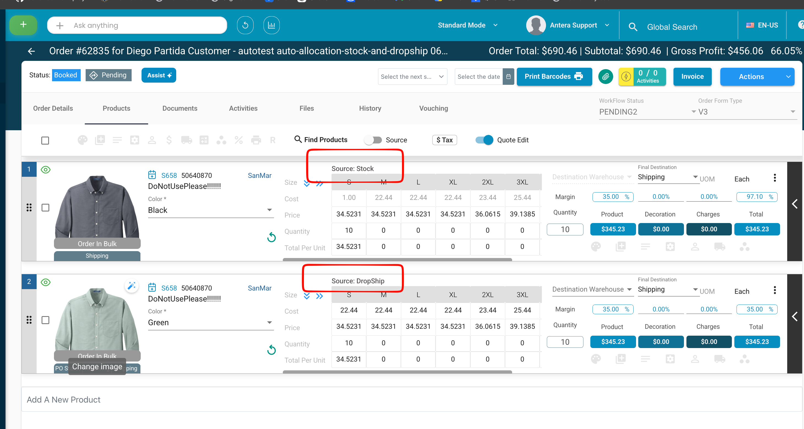
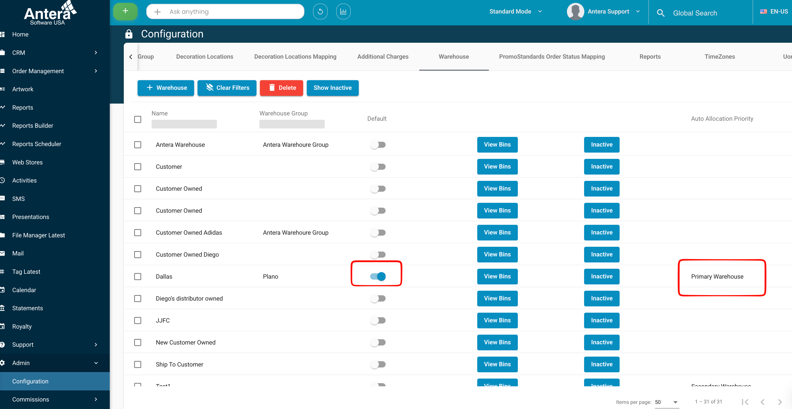
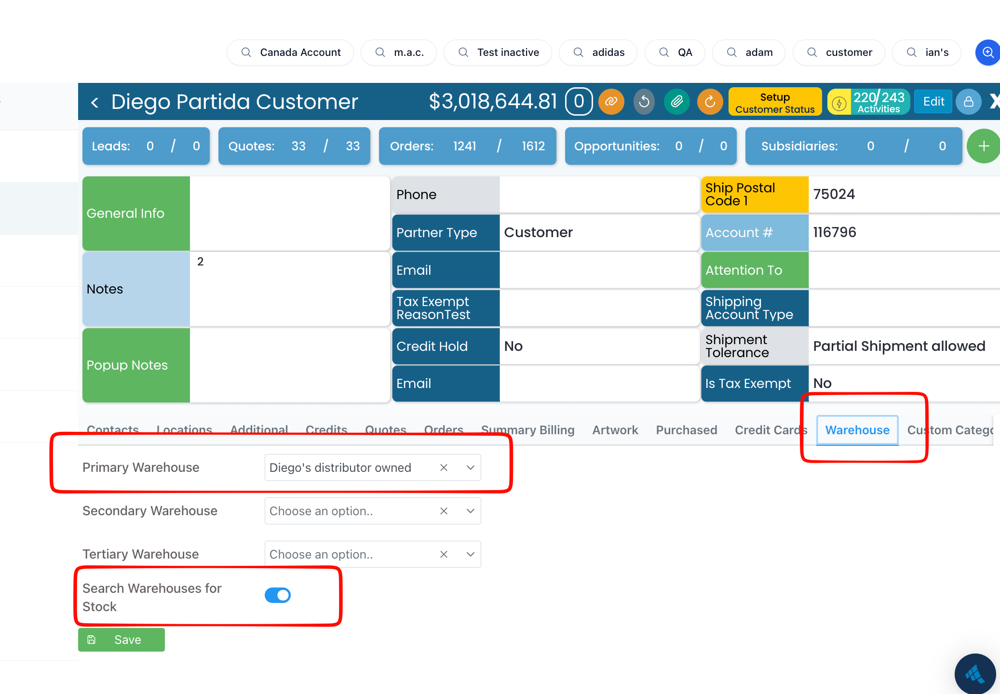
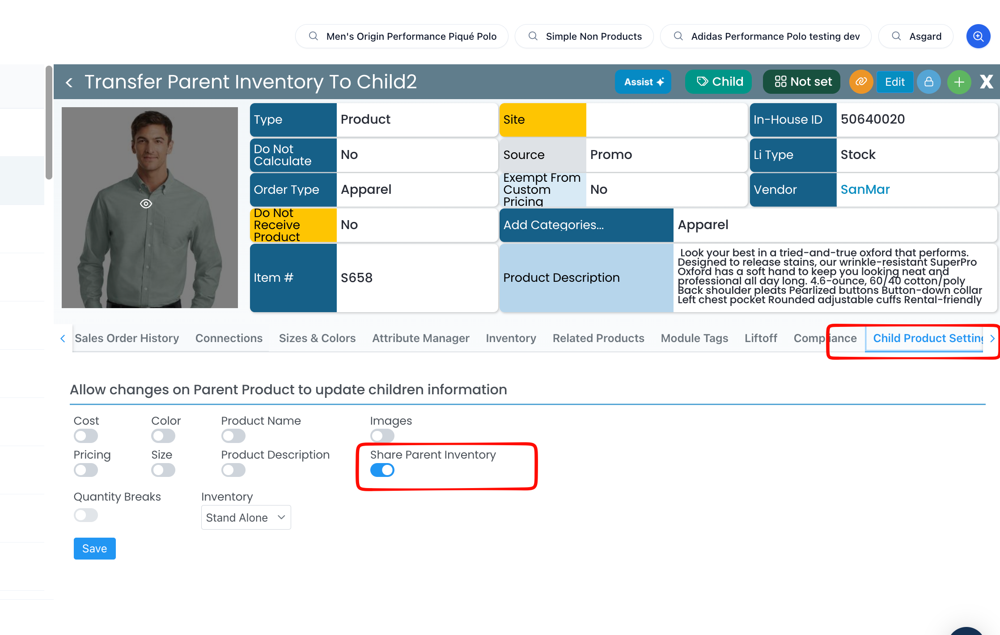

Auto Allocation Guide
How the system decides, line item by line item, what ships from stock and what gets dropshipped when you book a pending order, including partial stock, backorders, warehouse priority, and pulling inventory from a parent. Written for QA and Support.
Intended behavior reference · Standard & Store orders01How auto-allocation works, in one minute
When you book a pending order, auto-allocation walks every line item, and every size (matrix row) within it, and asks one question: “can I cover this from stock?” Then it reserves what it can and routes the rest.
1) Enough stock → the row stays Stock and the inventory is reserved. → 2) Partial stock → the covered quantity stays Stock; the shortfall becomes a DropShip line (or a Backorder, if that mode is on). → 3) No stock → DropShip / Backorder / in-place flip, depending on settings.
Two things can change the “available stock” number before the decision is made: which warehouse the system looks in (there's a priority order), and whether it's allowed to pull inventory from a parent product into the child. Both are covered below. The line-item “source from stock vs. dropship” value is called the Matrix PO type, it appears as Source on the order line. (On the product itself, the eligibility field is Li Type.)
02Prerequisites: when auto-allocation runs
All of these must be true, or the order books without any auto-allocation happening.
| Requirement | Detail |
|---|---|
| Order is Pending | Allocation happens when a pending order is booked. |
| Auto Allocation is ON | The system-level setting must be enabled in Admin ▸ Antera Admin ▸ Settings ▸ Orders ▸ Inventory Sourcing. |
| Order has line items | There must be at least one line item to evaluate. |
| Product Li Type = Stock | Set on the product itself (the Li Type field). Only Stock-type products are eligible; for those, each line item can be set to release from stock or dropship, the Matrix PO type, shown as Source on the line. |
03Settings & flags that drive allocation
Each of these changes how a shortfall is handled or where stock is pulled from. The Where to find it column is the menu path; screenshots are added below.
| Setting | What it does | Where to find it |
|---|---|---|
| Auto Allocation | Master switch. Must be ON for allocation to run at all. | Admin ▸ Antera Admin ▸ Settings ▸ Orders ▸ Inventory Sourcing |
| Allow No/Low Stock Allocation (Generate Backorder Quantity) “Backorder mode” | When ON, a shortfall is not split into a DropShip line. The line stays a single Stock line and the missing quantity is recorded as a backorder (bell icon). Zero-qty rows are kept, not stripped. | Admin ▸ Settings ▸ Orders ▸ Inventory Sourcing |
| Li Type = Stock | Set on the product. Makes a product eligible for allocation; its line items can then choose stock vs. dropship. | Product record · Li Type field |
| Matrix PO type shown as “Source” | Per line-item value: source this row from Stock or DropShip. This is what allocation reads and rewrites; it appears as Source on the order line. | Order ▸ line item · Source |
| Primary / Secondary / Tertiary warehouse | The global priority order the system searches for stock, set per warehouse via the Auto Allocation Priority column. | Admin ▸ Configuration ▸ Warehouse |
| Default warehouse | Fallback used when none of the priority warehouses have stock, the warehouse with its Default toggle on. | Admin ▸ Configuration ▸ Warehouse · Default toggle |
| Customer warehouse override | Per-customer Primary/Secondary/Tertiary that replaces the global priority for that customer. | Customer ▸ Warehouse tab |
| Search Warehouses for Stock | Customer setting. When ON, after the priority warehouses come up short, the system scans any other warehouse for stock, and the Default last. | Customer ▸ Warehouse tab (bottom) |
| Share Parent Inventory | When ON, a child product can pull inventory from its parent at booking (see §06). | Product ▸ Child Product Settings |
| Allow Transfer Parent Inventory to Child Pre-Decorated Products Aether Orders Only | System-level enable for parent → child transfer. Per the setting label, it is scoped to Aether orders and pre-decorated child products. | Admin ▸ Settings ▸ Orders ▸ Inventory Sourcing |
Setting locations
Where each setting lives in Antera. Click any image to open it full size.






04The allocation outcomes
For each size (matrix row), allocated = min(required, available stock) and remainder = required − allocated. What happens to the remainder is the whole story.
All Stock
Stock covers the row. It stays Stock and the inventory is reserved. No DropShip line.
Stock + DropShip line
The covered quantity stays Stock on the original line; the shortfall (plus any fully-unstocked sizes) moves to a new DropShip line. Zero-stock sizes are removed from the original line.
Stock + Backorder
With Backorder mode on, nothing splits off. The line stays a single Stock line and the shortfall is stored as a backorder (bell). Zero-qty rows are kept.
05Warehouse priority & fallback
“Available stock” depends on which warehouse the system checks. It walks a priority list and stops at the first that can cover the row.
| Order | Warehouse | Notes |
|---|---|---|
| 1 | Primary | The customer's Primary if a customer override is set; otherwise the global Primary. |
| 2 | Secondary | Customer override or global. |
| 3 | Tertiary | Customer override or global. |
| 4 | Any other warehouse | Only if Search Warehouses for Stock is ON for the customer. |
| 5 | Default warehouse | Final fallback. If it has no stock either, the row follows the DropShip / Backorder rules. |
06Parent → Child inventory transfer
With Share Parent Inventory on (Product ▸ Child Product Settings), a child that's short on stock can pull inventory from its parent at booking time, before the shortfall is dropshipped or backordered.
At booking the system searches the child's warehouses first. If the child can't cover the row, it looks at the parent's inventory. If the parent has it, the needed quantity is transferred into the child (FIFO by lot, with cost carried over); if not, the row follows the normal DropShip / Backorder rules.
| Rule | Behavior |
|---|---|
| Only Stock-type lines | If the line's Matrix PO type is DropShip, no transfer happens. |
| Transfer amount | min(shortfall, parent inventory). If the parent can't cover it all, the rest is backordered/dropshipped. |
| Warehouse type must match… | The transfer normally only works when parent and child stock are the same warehouse type: Customer-owned, Distributor-owned (default), or Vendor-owned. |
| …unless the child has zero | If the child has 0 stock for the required items, it can pull from the parent regardless of warehouse type. |
| FIFO & cost | Quantity is taken from parent lots oldest-first. If the child has its own cost it's used; otherwise a weighted-average cost from the parent lots is applied. |
| Unreserve doesn't reverse it | If, after booking, you unreserve the items on the line, the child keeps the transferred inventory, it is not sent back to the parent. |
07Allocation simulator
Enter the required and in-stock quantities per size, flip the flags, and see exactly how the line item is rewritten when the order books. This mirrors the system's allocation rules.
| Size | Required | Stock |
|---|
08Decision flowcharts
The same logic, drawn out. Diamonds are checks; green boxes are outcomes.
09Scenario library
Worked examples from the QA scenarios. Search or filter to confirm intended behavior.
| Group | Conditions | Outcome |
|---|
10QA test runner
A live, trackable checklist of every auto-allocation and parent-transfer scenario, with expected outcomes computed from these same rules.
11Glossary
| Auto allocation | The booking-time process that reserves stock per line and routes shortfalls to DropShip or Backorder. |
| Li Type | The product-level field that marks a product as Stock-eligible for allocation. (The line-item equivalent is the Matrix PO type / Source.) |
| Matrix PO type | The line-item value that says a size sources from Stock or DropShip, shown as Source on the order line. |
| Backorder mode | The “Allow No/Low Stock Allocation (Generate Backorder Quantity)” setting, keeps one Stock line and records shortfalls as backorders. |
| DropShip line | A new line item created for the shortfall, fulfilled by a vendor instead of from stock. |
| In-place flip | When nothing can be stocked, the original line itself becomes a DropShip line (no separate line created). |
| Share Parent Inventory | Child Product setting allowing a child to pull inventory from its parent at booking. |
| Warehouse types | Customer-owned, Distributor-owned (default), Vendor-owned. Parent→child transfers normally require a matching type. |
| Default warehouse | Admin ▸ Warehouses fallback used when the priority warehouses have no stock. |